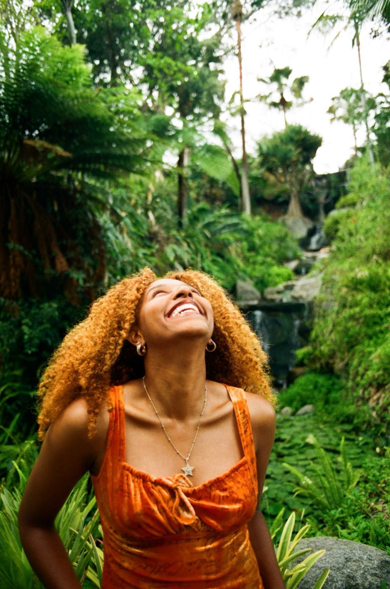

About
Nicole Hernandez
Nicole Hernandez is a San Diego artist working where sound, movement, heritage and visual storytelling meet. Rooted in her Afro-Cuban heritage and raised between Tijuana and San Diego, she writes in English and Spanish, and the salsa, reggaeton and hip-hop she grew up with run through everything she makes.
Her debut album, Layers, is Afro-Cuban R&B about the many sides of a person: identity, emotion, culture, and the ways we connect. She built a whole world around it, from the companion short film Layered Visions to a music video that premiered on an IMAX Dome, to live shows with an all-women band of San Diego musicians.
Her work moves between vulnerability and strength, intimate one moment and cinematic the next. On a festival stage or in a living room, the invitation is the same: come in close, and stay a while.
a roll of film
drag to look around · click to open
Beyond the music
NEXUS
The same belief that everything is connected led Nicole to found NEXUS, a space where music, dance, film and creative minds come together. For creatives, by creatives.
Visit NEXUS ↗